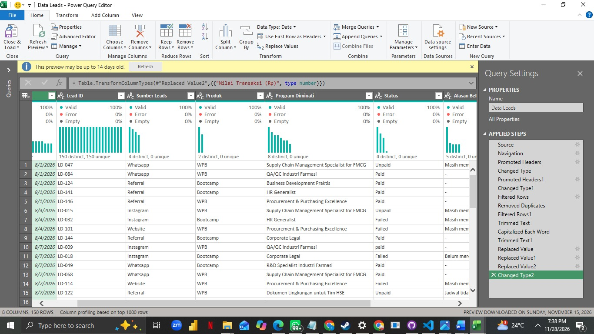
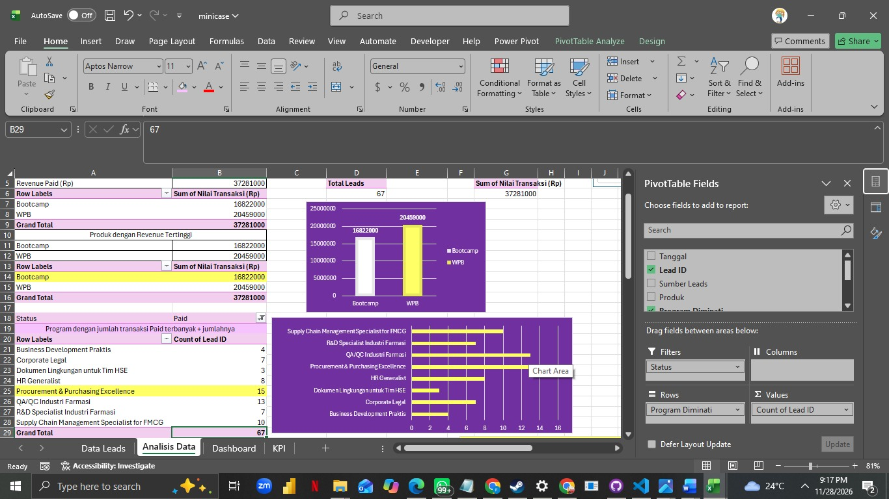
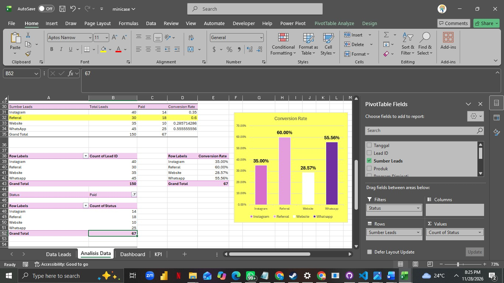
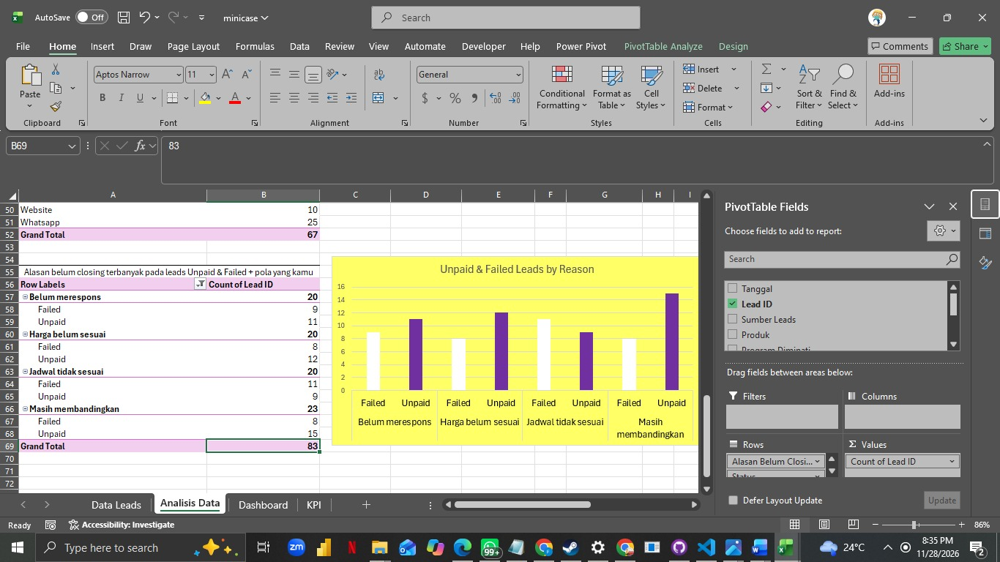

IODA Academy
Customer Data Analyst Case Study
Analisis data leads dan penjualan untuk mengidentifikasi performa produk, efektivitas sumber leads, serta pola leads yang belum berhasil melakukan pembayaran.
01. Project Overview
Studi kasus ini menggunakan dataset simulasi leads dan penjualan IODA Academy periode Agustus–Oktober 2026. Analisis dilakukan untuk memahami performa penjualan, efektivitas sumber leads, serta alasan leads belum berhasil melakukan pembayaran.
Hasil analisis diharapkan dapat membantu tim Sales dan Marketing dalam mengevaluasi performa serta menentukan strategi tindak lanjut yang lebih terarah.
Objectives
- Mengevaluasi performa penjualan berdasarkan produk dan program.
- Membandingkan efektivitas sumber leads berdasarkan conversion rate.
- Mengidentifikasi alasan leads berstatus Unpaid dan Failed.
- Menyajikan hasil analisis melalui dashboard sederhana.
- Menyusun insight dan rekomendasi tindak lanjut.
Dataset
Dataset terdiri dari data leads, informasi produk/program, sumber leads, status transaksi, serta nilai transaksi. Setiap Lead ID mewakili satu leads.
02. Data Preparation
Tahap awal dilakukan untuk memeriksa kualitas data dan memastikan dataset siap digunakan dalam analisis. Pemeriksaan meliputi duplikasi, konsistensi penulisan, format data, serta kelengkapan informasi.

Data Preparation Notes
- Duplicate Records: Ditemukan 3 data duplikat (LD-084, LD-019, dan LD-063). Data duplikat dihapus, sehingga jumlah data berkurang dari 153 menjadi 150 baris.
- Lead Source Standardization: Menyeragamkan penulisan kategori WhatsApp dan Website pada kolom sumber leads.
- Product Standardization: Menyeragamkan penulisan kategori WPB pada kolom produk.
- Status Standardization: Menyeragamkan penulisan status Paid.
- Whitespace Handling: Menghapus spasi berlebih pada kolom Status dan Lead Source menggunakan Trim.
- Data Type Conversion: Mengubah tipe data kolom Nilai Transaksi (Rp) dari teks menjadi numerik agar dapat digunakan dalam perhitungan analisis.
03. Data Analysis
Analisis dilakukan menggunakan formula Excel dan Pivot Table untuk menjawab pertanyaan bisnis dalam mini-case.
Sales Performance
Membandingkan revenue Paid dan jumlah transaksi Paid berdasarkan produk serta program.
Revenue by Product
- WPB: Rp20.459.000
- Bootcamp: Rp16.822.000
Produk WPB menghasilkan revenue Paid tertinggi sebesar Rp20.459.000, lebih besar dibandingkan Bootcamp.
Program Performance
Procurement & Purchasing Excellence tercatat sebagai program dengan jumlah transaksi Paid tertinggi berdasarkan ringkasan analisis, sebesar 15 transaksi.

Lead Source Performance
Membandingkan jumlah leads dan conversion rate setiap sumber leads untuk mengidentifikasi sumber yang paling efektif.
Lead Source Performance
- Instagram: 40 leads | Conversion Rate 35%
- Referral: 30 leads | Conversion Rate 60%
- Website: 35 leads | Conversion Rate 29%
- WhatsApp: 45 leads | Conversion Rate 56%
Referral memiliki conversion rate tertinggi sebesar 60%, diikuti WhatsApp sebesar 56%.

Unpaid & Failed Analysis
Mengidentifikasi alasan paling sering ditemukan pada leads yang belum berhasil melakukan pembayaran atau batal membeli.
Reasons for Unpaid & Failed Leads
Dari 83 leads berstatus Unpaid dan Failed, alasan "Masih Membandingkan" menjadi kategori terbanyak, dengan 23 leads (27,71%).
Kategori tersebut terdiri dari 15 leads Unpaid dan 8 leads Failed. Hal ini menunjukkan bahwa sebagian prospek masih berada dalam tahap pertimbangan sebelum mengambil keputusan pembayaran.

Key Insights & Recommendations
Insight 1 — Lead Source Performance
Referral memiliki conversion rate tertinggi sebesar 60%, sedangkan WhatsApp menghasilkan jumlah leads dan Paid terbanyak, yaitu 45 leads dan 25 Paid.
Temuan ini dapat menjadi pertimbangan dalam menentukan prioritas pengembangan sumber leads. Referral menunjukkan conversion rate yang tinggi, sementara WhatsApp menghasilkan jumlah pelanggan berbayar terbanyak selama periode analisis.
Insight 2 — Reasons for Unpaid & Failed
Alasan "Masih Membandingkan" menjadi kategori terbanyak pada leads berstatus Unpaid dan Failed, dengan 23 leads (27,71%). Pada kategori ini, jumlah Unpaid (15 leads) lebih besar daripada Failed (8 leads).
Temuan ini dapat membantu tim Sales mengidentifikasi prospek yang masih dalam tahap pertimbangan dan mungkin membutuhkan informasi tambahan sebelum mengambil keputusan pembayaran.
Recommendation 1 — Targeted Follow-up
Tim Sales dapat melakukan follow-up terarah kepada leads berstatus Unpaid dengan alasan "Masih Membandingkan". Follow-up dapat mencakup informasi mengenai materi pembelajaran, manfaat program, durasi, jadwal, dan biaya.
Responsible: Tim Sales.
Measurement: Jumlah leads yang berubah dari Unpaid menjadi Paid dan conversion rate pada kelompok leads tersebut setelah follow-up.
Recommendation 2 — Referral Channel Development
Tim Marketing dapat menguji strategi pengembangan sumber Referral secara bertahap dengan mendorong peserta atau alumni membagikan informasi program kepada jaringan mereka. Pencatatan sumber leads perlu dilakukan secara konsisten untuk mendukung evaluasi performa.
Responsible: Tim Marketing bersama Tim Sales.
Measurement: Jumlah leads Referral, jumlah Paid dari Referral, dan conversion rate Referral pada periode berikutnya dibandingkan dengan periode Agustus–Oktober 2026.
Data Limitations
Analisis alasan belum closing hanya mencakup leads berstatus Unpaid dan Failed. Data belum menyediakan informasi mengenai riwayat komunikasi, biaya pemasaran per sumber leads, maupun alasan mendalam di balik keputusan calon pelanggan.
Oleh karena itu, dugaan bahwa conversion rate Referral yang tinggi dipengaruhi oleh faktor kepercayaan, atau bahwa leads yang masih membandingkan dapat dikonversi melalui follow-up, merupakan hipotesis yang perlu diuji lebih lanjut dan belum dapat dibuktikan langsung dari data.
04. Dashboard
Dashboard merangkum indikator utama penjualan dan performa leads selama periode analisis.
Dashboard Metrics
- Total Leads
- Jumlah Paid
- Conversion Rate
- Revenue Paid
- Lead Source Performance
- Reasons for Unpaid & Failed
05. Insights & Recommendations
Key Insights
Insight 1 — Akan diisi berdasarkan hasil analisis data.
Insight 2 — Akan diisi berdasarkan hasil analisis data.
Recommendations
Recommendation 1 — Akan disusun berdasarkan temuan analisis.
Recommendation 2 — Akan disusun berdasarkan temuan analisis.
06. Tools & Skills
07. Project File
Workbook Excel berisi proses pengolahan data, analisis, dashboard, serta dokumentasi hasil mini-case.
View Excel Workbook